Чистый цвет (монотонный, однородный) не встречается в природе. Можно сказать, что он противоестественен.
Ведь на зеленом листе дерева всегда видны прожилки другого цвета, на чистом голубом небе присутствует дымка от облаков.
Даже забор или стена выкрашенные краской одного цвета получают оттенки за счет неровностей поверхности и качества
покраски.
Не даром вебмастера для своих сайтов используют фоны с имитацией бумаги, ткани или камня. Такие украшения делают общую
картину
более привычной для глаз. Это может вызвать больше доверия у посетителя (на красивую картинку посмотреть всегда
приятно), удержит
его на сайте, что в конечном итоге положительно скажется на поведенческих факторах.
Фоновые изображения для сайта
Чаще всего для украшения сайта используются фоновые изображения. Главное требование к ним — это
беcшовность и размер. Если картинка бесшовная, то ее можно использовать как спрайт небольшого размера, например 100 на
100 пикселей,
и замостить ею всю площадь экрана, при этом общее изображение будет выглядеть как одно единое целое без видимых границ
внутри.
Фоновые изображения на CSS
Возможности CSS (каскадная таблица стилей) позволяют генерировать простые изображения (полосы, круги, квадраты). Этим
можно
воспользоваться для формирования фона для объектов на сайте. Преимущество у данного метода в том, что для оформления
фона вам
не нужен графический редактор и размер такого фона минимален.
К минусам стоит отнести невозможность или очень большая сложность создать фоны в виде реальных предметов, надписей, фотографий и т.п.
Полосатый фон на CSS
Перейдем от слов к делу, сделаем на фоне диагональные полосы используя CSS функцию repeating-linear-gradient():
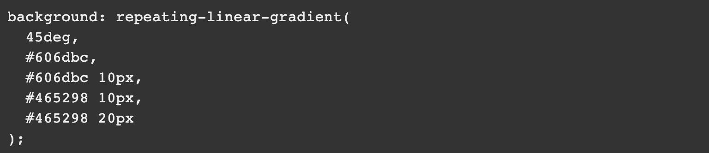"Если применить это свойство к блоку DIV, то выглядеть он будет примерно так:
Рассмотрим подробнее все параметры.
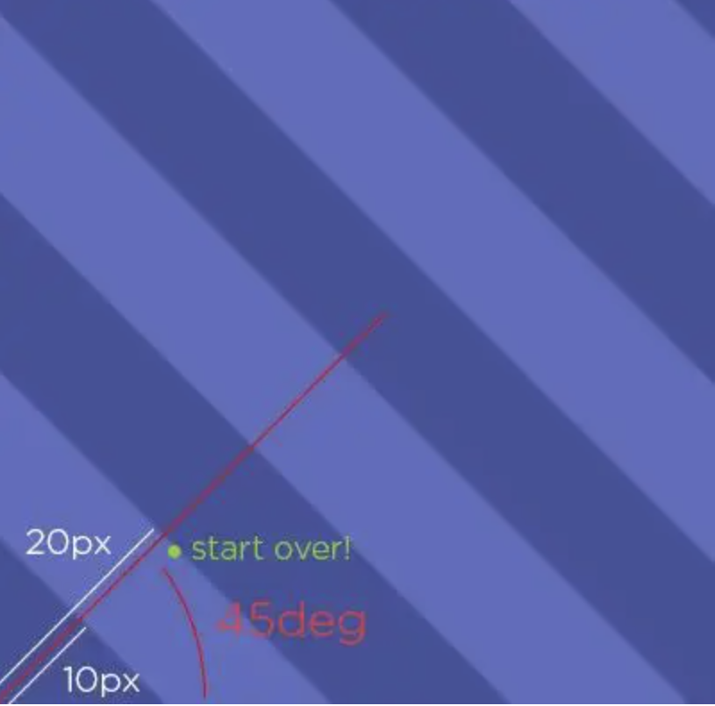- 45deg — это угол наклона полосок
- #606dbc — начальный цвет градиента
- #606dbc 10px — цвет на отметке 10 пикселей
- #465298 10px — цвет на отметке 10 пикселей
- #465298 20px — цвет на отметке 20 пикселей
Как видно мы получили три отрезка: от начала до 10 пикселей, отрезок нулевой длины на отметке 10 пикселей, где просто
меняется цвет и третий
отрезок от 10 до 20 пикселей.
В моем примере никакого градиента (плавной смены цвета) нет, так как цвет в начале и конце отрезков одинаковый. А
функцию
repeating-linear-gradient() мы используем для чередования цветов.
Какие углы наклона можно использовать
Меняя угол наклона можно получить горизонтальные и вертикальные полосы. В качестве угла наклона можно использовать
предопределенные
константы to right, to bottom, to bottom left.
Следующий стиль добавит к блоку DIV фон с вертикальными полосами:
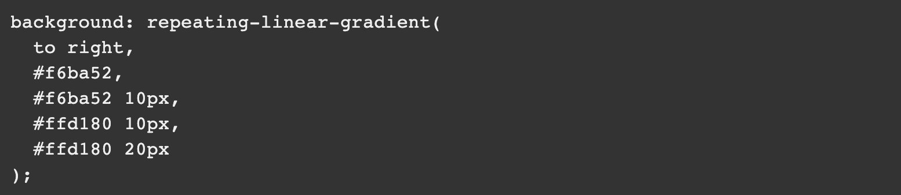 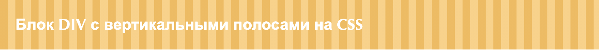Какие цвета можно использовать
Можно использовать все цвета соответствующие CSS стандартам, а так же прозрачный цвет transparent.
Наложим полоски на следующее изображение (взято с сайта Mozilla — https://mdn.mozillademos.org/files/15525/critters.png):
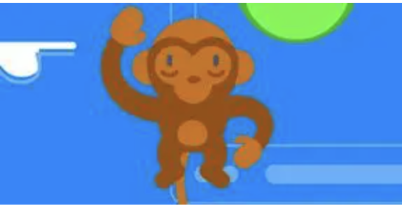Используем такой стиль оформления:
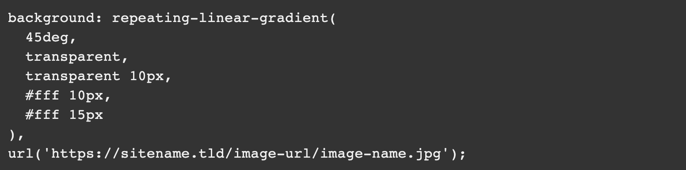Выглядеть блок DIV с таким оформлением будет следующим образом:
Цветов может быть несколько
Количество цветовых полосок не ограничено двумя. Вот пример оформления на CSS для телевизионной испытательной таблицы,
изображение
которой формируется ГЦП (генератор цветных полос).
Те кто работал на телецентре или занимался ремонтов цветных телевизоров должны помнить эту картинку 🙂
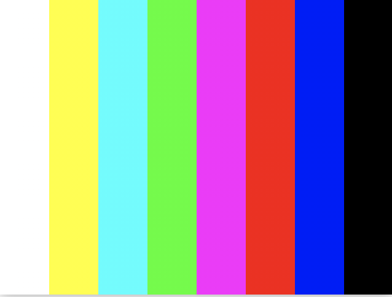Короткие записи CSS стилей полосок для фона
Оформление полосок можно сократить не расписывая цвет в каждой точке, а указав диапазон:
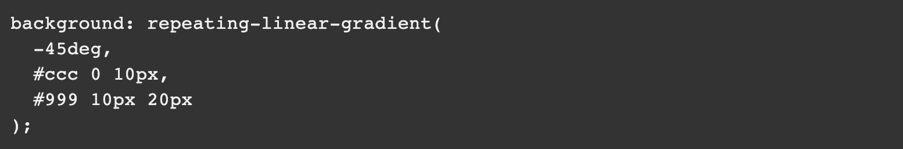Результат оформления блока короткой записью стилей:
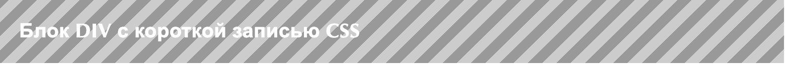Узоры в качестве фона на CSS
С помощью CSS стилей можно «нарисовать» не только примитивные полоски, но и достаточно сложный и красивый фон:
![Прямоугольник черного цвета со следующим кодом: background:
repeating-linear-gradient(90deg, transparent 0 50px,
rgba(255, 127, 0, 0.25) 50px 56px,
transparent 56px 63px,
rgba(255, 127, 0, 0.25) 63px 69px,
transparent 69px 116px,
rgba(255, 206, 0, 0.25) 116px 166px),
repeating-linear-gradient(0deg, transparent 0 50px,
rgba(255, 127, 0, 0.25) 50px 56px,
transparent 56px 63px,
rgba(255, 127, 0, 0.25) 63px 69px,
transparent 69px 116px,
rgba(255, 206, 0, 0.25) 116px 166px),
repeating-linear-gradient(-45deg, transparent 0 5px,
rgba(143, 77, 63, 0.25) 5px 10px),
repeating-linear-gradient(45deg, transparent 0 5px,
rgba(143, 77, 63, 0.25) 5px 10px);](img/14.png)
Блок DIV с таким фоном будет выглядеть следующим образом:
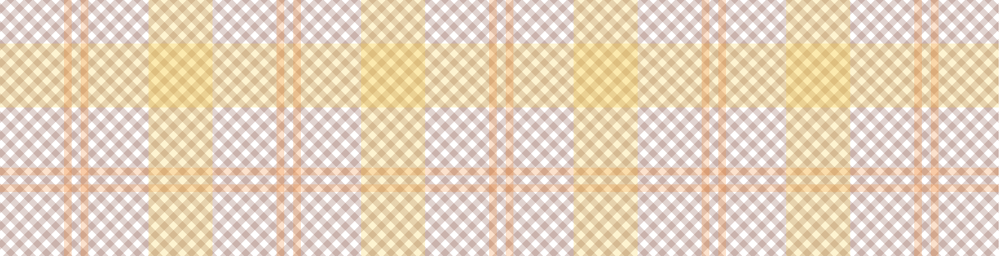Круговые полосы на CSS
Полоски могут быть радиальными, для их оформления нужно использовать CSS функцию repeating-radial-gradients():
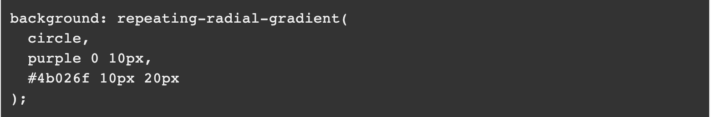Выглядеть это будет так:
Выводы
Как видите с помощью CSS можно создать красочные фоны для элементов сайта и возможно отказаться от использования изображений.
Литература
При написании статьи были использованы следующие источники: